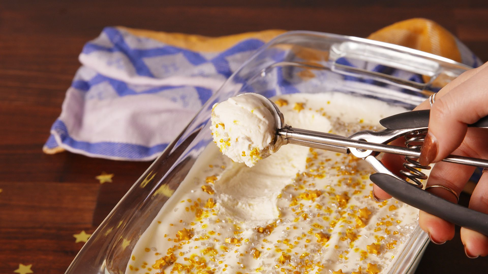

Brownie Batter No-Churn Ice Cream
INGREDIENTS :
- 1 box brownie mix, plus ingredients called for on bo
- 1 c. sweetened condensed milk
- 1/2 tsp. pure vanilla extract
- 2 c. heavy cream
METHOD :
- Preheat oven to 350° (or according to mix instructions, if different). Open mix and measure out 1/2 cup, then set the rest aside.
- Pour 1/2 cup brownie mix into a medium-sized mixing bowl and add sweetened condensed milk. Mix until thoroughly combined, then set aside.
- Bake the remaining brownie mix according to the package's instructions. You may need a few extra minutes to fully cook the center of the brownies, since they'll be a bit fudgier than usual. Set aside to cool, then crumble brownies into bite-sized pieces.
- Pour heavy cream into a large mixing bowl and beat until stiff peaks form, 2 to 3 minutes. (When you remove the whisk from the heavy cream, it should stay standing up.) Fold in the sweetened condensed milk mixture, then most of the brownie bits.
- Pour the mixture into a loaf pan, top with remaining brownie bits and freeze, 5 hours, or up to overnight.